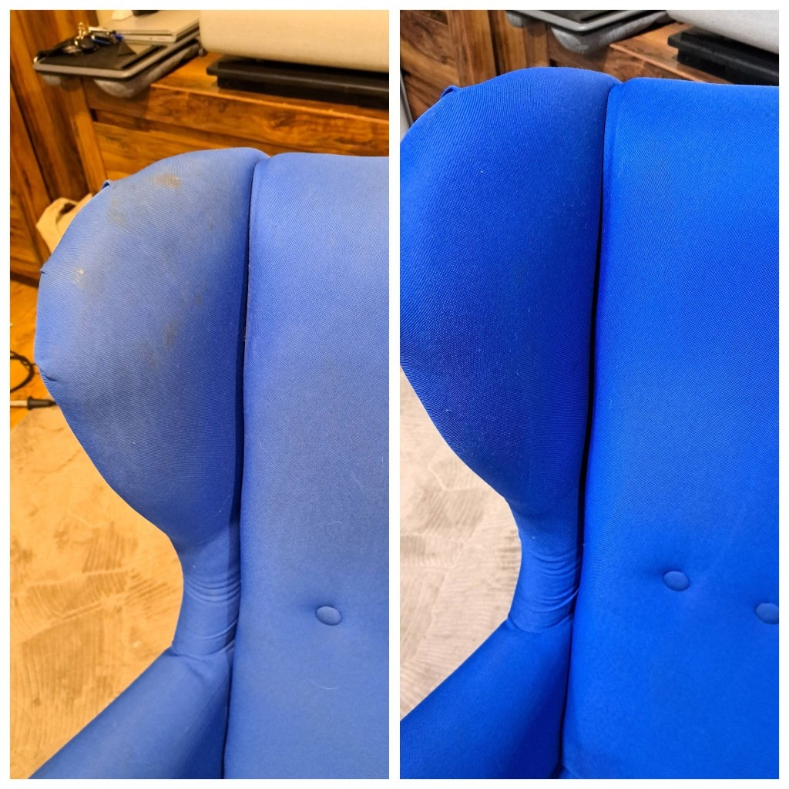

Kanapy i fotele
Zagłówki, siedziska, oparcia. Kolor wraca do równego odcienia.

Pranie tapicerki · 10 lat
Kanapy, fotele i wnętrza aut. Przyjeżdżamy ze sprzętem i pierzemy na miejscu — brud wychodzi z tkaniny, a nie zostaje na wierzchu.

Na miejscu
Kanapa zostaje w salonie, auto na podjeździe. Pranie ekstrakcyjne wyciąga brud z tkaniny, a nie rozciera go po wierzchu.
Nie sprzedajemy pakietów z cennika. Pokazujemy przed i po. Jak chcesz wycenę — zadzwoń.
Woda i odciąg. Nie samo przetarcie, po którym plama wraca.
Sprzęt przywozimy ze sobą. Dom albo podjazd.
Różnica jest na zdjęciu, nie w opisie.
Oferta
Zakres dobieramy do zabrudzenia, nie do gotowej listy z internetu.
Zagłówki, siedziska, oparcia. Kolor wraca do równego odcienia.
Brud idzie z włosa, nie zostaje rozmazany po wierzchu.
Materiał siedzeń i boczków. Zszarzała tkanina znowu ma swój kolor.
Piasek, błoto, progi. Odkurzanie i pranie wykładziny.
Konsola, nawiewy, tunel, okolice kierownicy. Bez tłustej warstwy.
Fotele, podłoga i plastiki podczas jednej wizyty.
Jak działamy
Trzy kroki. Najpierw telefon, potem termin, na końcu czysta tkanina.
664 031 714. Mówisz, czy to kanapa, dywan, czy auto. Dostajesz wycenę tego zakresu.
Przyjeżdżamy ze sprzętem. Nie stoisz w kolejce i nie zgadujemy na miejscu, co jest do zrobienia.
Tkanina jest czysta i jeszcze chwilę wilgotna. Powiemy, kiedy można z powrotem usiąść albo jechać.
Realizacje
Przesuwaj strzałkami. Kliknij zdjęcie, żeby powiększyć.
Pytania
Krótko. Jak czegoś tu nie ma, telefon załatwia resztę.
Zależy od mebla albo auta i od tego, jak mocno jest zabrudzone. Kanapa to inna kwota niż całe wnętrze. Pod 664 031 714 dostajesz wycenę, nie widełki z internetu.
Fotel albo kanapa często mieści się w jednej wizycie. Całe wnętrze auta zwykle też w ten sam dzień — zależnie od stanu.
Tak. Czyścimy u Ciebie: w domu albo przy samochodzie. Adres podajesz przy umawianiu terminu.
Po praniu ekstrakcyjnym materiał jest wilgotny i wysycha w kilka godzin. Powiemy, kiedy można z powrotem usiąść albo jechać.
Nie każda. Stare, wżarte albo odbarwione ślady czasem zostają jaśniejsze. Mówimy to przed robotą, nie po.